AI digital human · short-video growth engine
One recording. Unlimited video.
SNW AI Assistant is a mobile AI video creation tool that clones your appearance and voice from a 10-second clip, generates scripts, and renders finished marketing videos. It also optimizes content for TikTok SEO, helping videos attract organic traffic and improve CTR.
10s
Of footage to clone from
3 min
To a working voice clone
3 steps
From blank screen to export
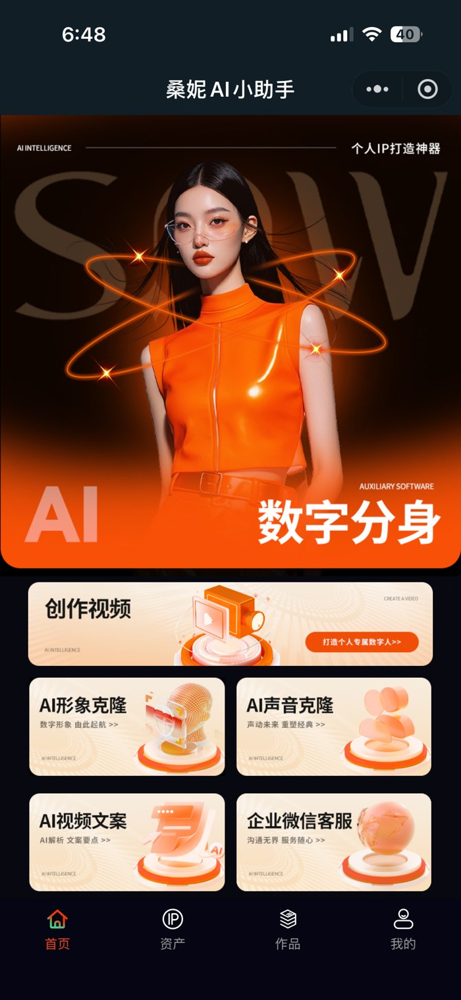
Capabilities
Five entry points, five finished jobs
How it works
Clone once, publish for ever
Every clone becomes a reusable asset. A brand keeps one presenter per line, or one per market, and pulls any of them into a new video.
Inside the app
Four screens, one workflow
Cloning, the asset library, voice training and the credit balance all live in the same mini-program.
Who it's for
Two shapes of customer
Comparison
Where SNW differs
Under the product
Four models under one tap
Cloning, lip-sync and voice models built in-house, so cost and quality stay under our control.
School Sphere · Web Version
Streamlining communication and administrative workflows for K–12 educators.
A web platform that consolidates fragmented school communication, reporting, and student records into one operational system.
SCOPE
0 —> 1 Product
DURATION
90 days
ROLE
UX Research, UX/UI Design
Problem
K–12 educators manage communication, scheduling, attendance, reporting, and student records across multiple disconnected systems, increasing administrative workload and reducing time for instruction and student support.
Solution
A web dashboard can reduce context switching by bringing operational tools into a single structured workspace.
Background
44%
of K-12 teachers report often or always feeling burned out at work
Rising vacancies
Teaching vacancies nationwide have increased significantly over the past two years, especially post-pandemic, as administrative load outside of teaching grows.
Research Process
10+ interviews with teachers and administrators
User Needs Statement
" As a public secondary school teacher, I need to efficiently manage parent communication and administrative tasks despite language and contact barriers , so I can spend more time supporting my students. "
Competitive Analysis
Assessed industry-leading solutions to understand current market offerings, workflow limitations, and opportunities for operational improvement.
Persona
Research-driven personas guided design decisions and ensured the product addressed users' real needs, pain points, and goals.
User Interviews
5 secondary school teachers (4 NYC, 1 Chicago), virtual & in-person, plus admin follow-ups.
Bucketing Activity
Participants grouped their administrative tasks into consolidated categories.
Ranking Activity
Buckets ranked by frustration, time cost, and contribution to success.
Final Design
One dashboard for attendance, cases, and teacher support, replacing five disconnected tools.
Dashboard: onboarding, today's goals, and quick actions surfaced on login.
Student profile, active case, and teacher support team in one view.
Case history and contribution log across the support team.
Admin overview: school attendance, pending approvals, tasks.
Active case list with health, turnaround, and team filters.
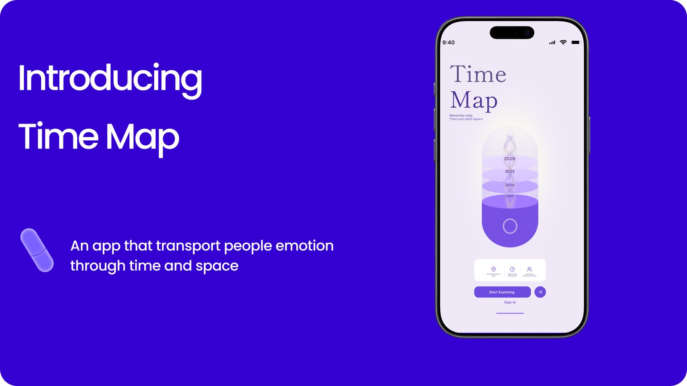
A spatial social platform for communicating across people, place, and time.
Digital communication is built for the present moment. Time Map asks what happens if you design for a different one, on purpose.
SCOPE
0 —> 1 Product
DURATION
60 days
ROLE
UX Research, UX/UI Design
Overview
Time Map is a spatial communication platform that lets people create memory capsules tied to a specific place and point in time. By combining an interactive map with a draggable timeline, users can intentionally rediscover past experiences or access messages scheduled for the future.
Product vision:
What if memories could be discovered instead of just stored?
My responsibilities
End-to-end: problem framing, user research, competitive positioning, product strategy, information architecture, interaction design, and a high-fidelity clickable prototype.
Outcome
A working prototype covering the full loop: discover, create, open, connect, and built around one core interaction: a bidirectional map + timeline.
Problem
Digital communication is optimized for immediacy, not for meaning that unfolds over time. That's not a gap I inferred from my own solution. It's a pattern that shows up consistently across the products people already use.
Products optimize for now
Messages are meant to be read immediately. Stories expire. Feeds rank recency over relevance, leaving no place for content tied to a specific past or future moment.
Memories are archived, not experienced
Photo libraries resurface content algorithmically, on the platform's schedule, not the user's. It happens to people, rather than being chosen.
Place is metadata, not interaction
Location is a tag on a post, not a way to navigate. No product asks: what happened here, at a different time?
Persona
Design challenge:
How do you make time and place? Not just content, things people can deliberately navigate, rather than passively experience?
Success criteria
- A first-time user creates and places a capsule with no instruction.
- A user finds something meaningful near their location within seconds.
- People schedule content for the future, not just the present.
Research
RESEARCH QUESTION
Is "time travel" a real motivating frame, or just an appealing metaphor? What would make someone trust a stranger's app enough to leave something personal at a real GPS coordinate?
SAMPLE AND RIGOR, STATED PLAINLY
Two interviews are shown here as illustrative primary research, not a validated finding, directional, not saturated. A production study would extend to 8–12 participants across more varied relationships to time before treating any decision as validated.
METHOD
Semi-structured 1:1 interviews, the right method for unprompted emotional recall ("what would you time travel to, and why?"), which needs open association rather than a forced-choice survey instrument.
WHERE THE BIAS IS
Both quotes skew toward past-nostalgia over future-self framing, worth naming, since it could quietly bias the product toward "revisit" over "send forward" if left unchecked. A larger study should specifically recruit for future-oriented use cases.
Competitive analysis
Time Map has no direct competitors. Instead, it competes with a set of behavioral alternatives, each addressing only one part of the underlying user need.
| Product | Primary job | Strength | Missing opportunity |
|---|---|---|---|
| Share experiences | Identity + social graph | No delayed delivery or intentional rediscovery | |
| Apple / Google Photos | Preserve memories | Personal archive | Algorithmically resurfaced, not intentionally created for the future |
| FutureMe | Write to future self | Delayed communication | No spatial context or shared discovery |
| BeReal | Capture the present | Authenticity | No long-term memory or future interaction |
| Snapchat Memories | Save moments | Personal archive | Time exists, but place isn't central |
| Timehop | Rediscover past content | Nostalgia | No path to intentionally create future experiences |
| Geocaching | Discover location content | Exploration | No emotional storytelling or temporal dimension |
Product Opportunity
Existing products treat people, place, and time as separate dimensions. Time Map treats all three as part of one interaction model, so communication is intentionally discovered, rather than immediately consumed.
This isn't "time travel" as a gimmick. It's intentional memory: giving people control over when and where something gets rediscovered, instead of leaving that to an algorithm or to chance.
| Product | User Group | Location | Time Feature |
|---|---|---|---|
| ✓ | ✗ | Present | |
| ✓ | Optional | Present | |
| Google Photos | Self | Optional | Past |
| FutureMe | Self | ✗ | Future |
| Geocaching | Community | ✓ | Present |
| Time Map | Self, Friends, Public | ✓ | Past, Present, Future |
No existing product spans all three dimensions across all three time horizons. That's the opportunity, not "Instagram plus FutureMe."
From Insight to Decision
Each research insight maps to one specific, testable design decision, not a general design principle.
People remember places as strongly as they remember time
Location becomes a primary interaction, not metadata
Delayed communication carries emotional weight for users
"When to open" is a mandatory, first-class step not a buried toggle
Public sharing requires clear privacy boundaries before people post anything personal
Three privacy tiers (Personal / Friends / Public), presented as a required step
People think about memories chronologically, not by exact date
A draggable timeline replaces a conventional date picker as the primary browsing model
Product Strategy
Each research insight maps to one specific, testable design decision, not a general design principle.
Value proposition
Leave something for a place and a time, not just a person.
Core interaction model
North Star Metric
Capsules opened per active user per week: rewards the full loop (leave, discover, open), rather than one-sided posting or passive scrolling.
MVP scope
Map + timeline browsing, capsule creation (media, schedule, privacy), capsule opening (map + AR), and a minimal social layer (profile, comments, friend sharing). 3D-scan capsules and public discovery algorithms are deliberately out of scope for v1.
Design Process
Information architecture
Two coordinate systems shown at once, space (map) and time (timeline scrubber) with a Map/AR toggle on the same location context. This replaces a conventional tab bar: past, present, and future are all reached by moving one scrubber, not by navigating to separate screens.
Why a timeline instead of a calendar?
Observation: people think about memories chronologically, not by exact date.
Decision: an interactive, draggable timeline instead of a traditional date picker.
Impact: lower cognitive effort, reinforcing the "time travel" mental model instead of feeling like form-filling.
Capsule creation flow
Sequenced concrete → abstract: media → message → open date → privacy → confirmation. The hardest decision — privacy and audience — comes after the user is already invested in the content, which should improve completion without hiding the choice.
Final Solution
Four flows built around one core interaction: the bidirectional map + timeline
01
Discover Through Time
User problem. Location-specific memories are undiscoverable once a feed moves on.
Design rationale. A draggable timeline paired with a live map lets users scrub between past and future years while staying anchored to one place.
Final UI. Map view with year selector and timeline scrubber; capsule density shown as count badges (e.g., "99+") near the user's pin.
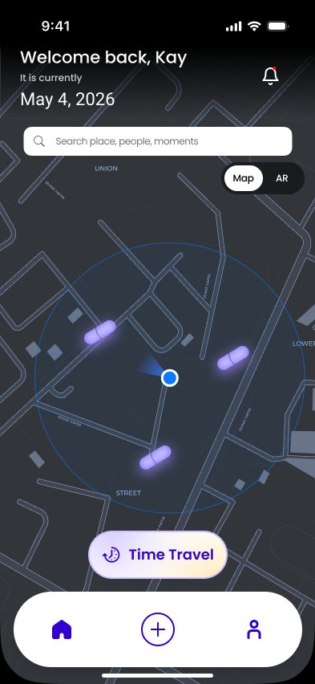
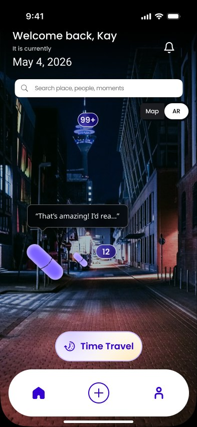
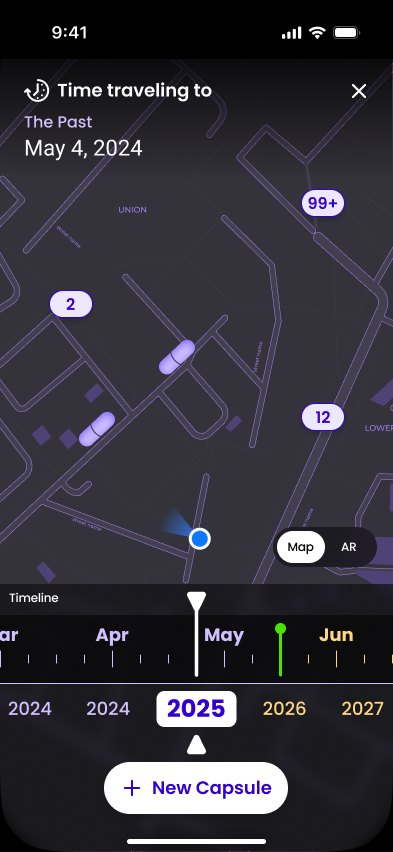
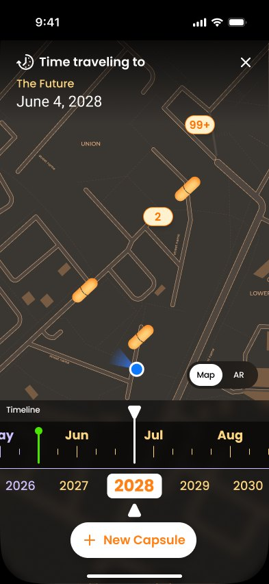
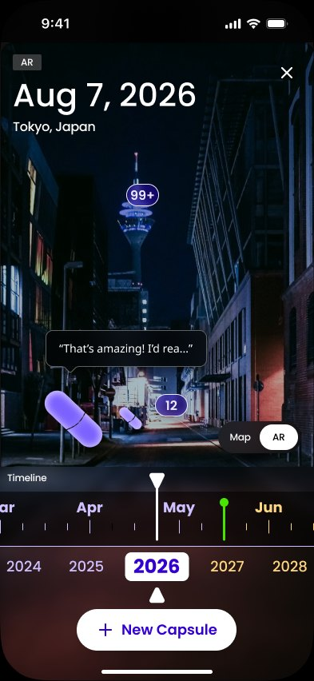
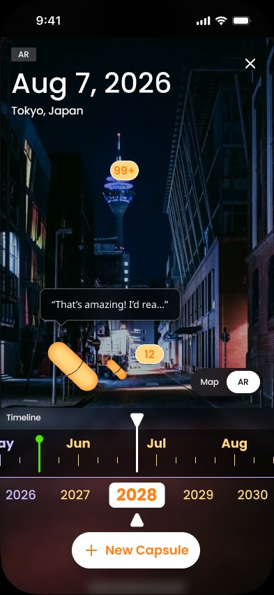
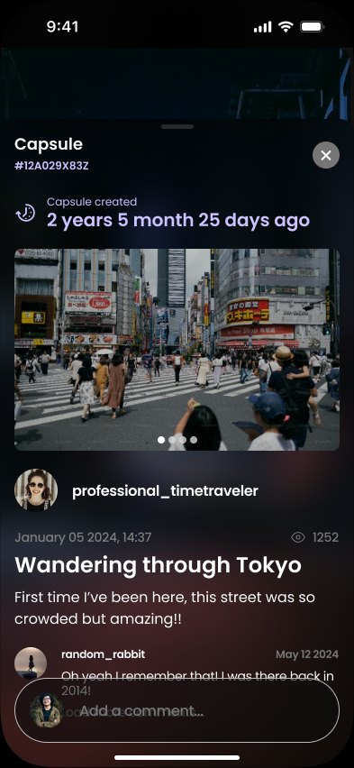
02
Create a Capsule
User problem. No product treats "send to the future" as equal to "post now."
Design rationale. Choosing the medium is its own step: image, video, audio, music, or text, because each is a different sensory way to share a memory, not just a file-type picker.
Final UI. Segmented progress bar; choose medium (image, video, audio recording, music, or text), then capture or upload content.
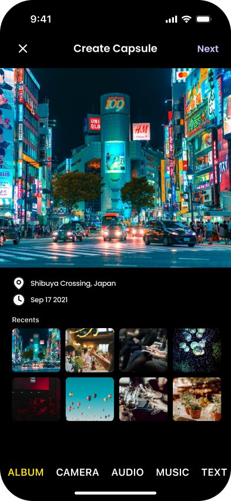
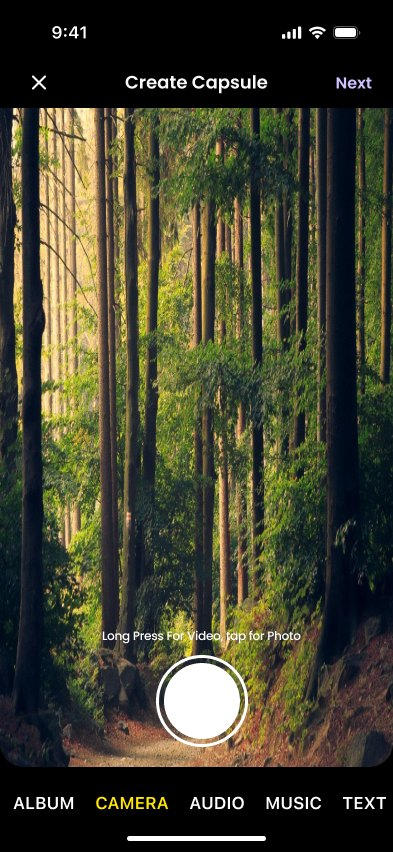
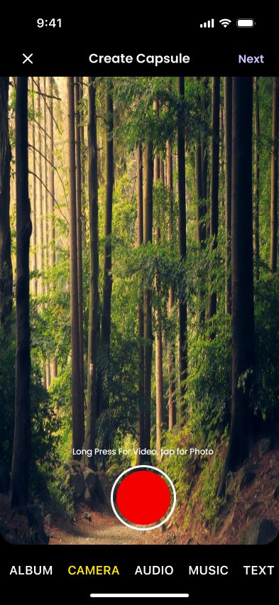
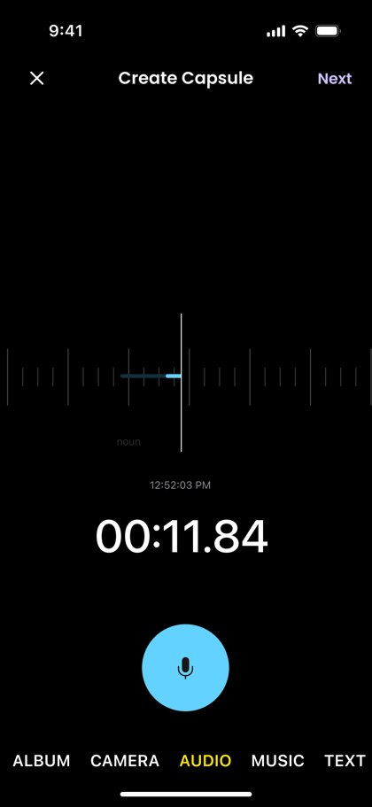
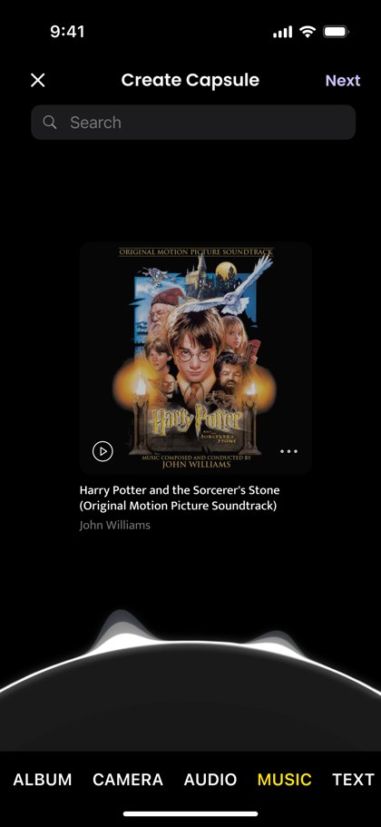
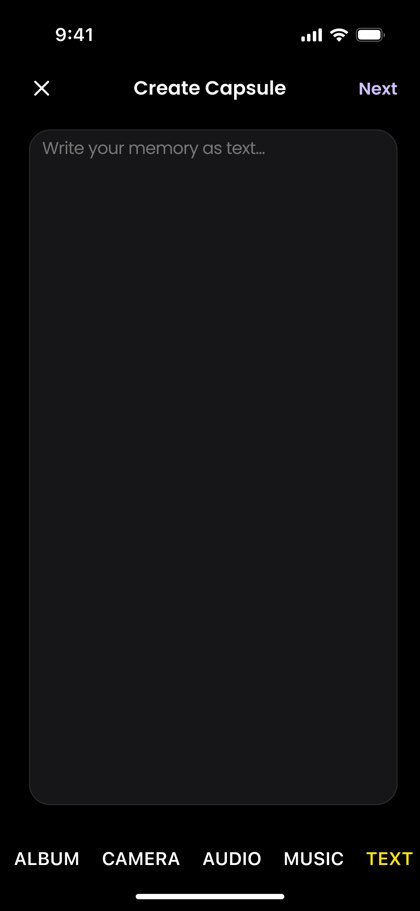
03
Edit Capsule
User problem. Delayed communication and public sharing both carry real consequences, so schedule and audience can't feel like buried settings.
Design rationale. Two dedicated parts within this step: first when to open (a required date, not an optional toggle), then who sees it (privacy tier plus friend sharing), each its own decision, not one combined form.
Final UI. Part 1: message + open date. Part 2: privacy (Personal / Friends / Public) and friend picker for shared capsules.
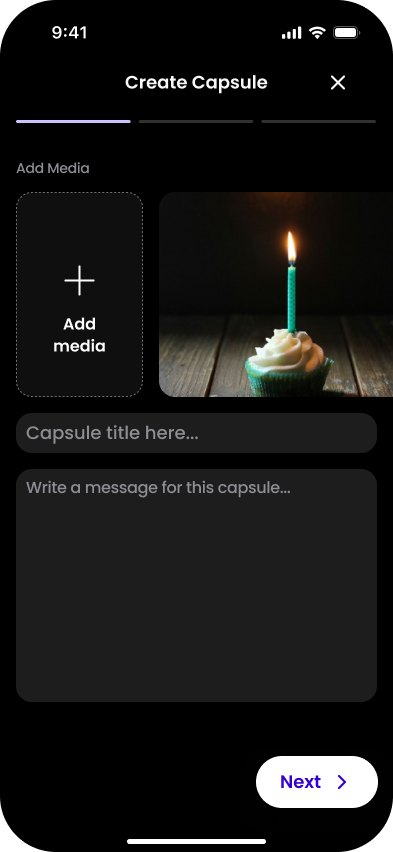
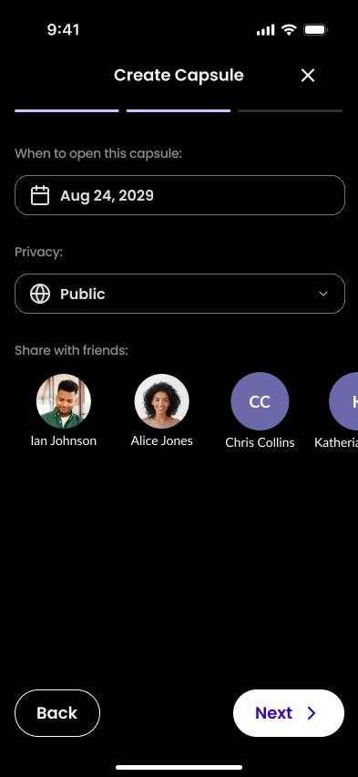
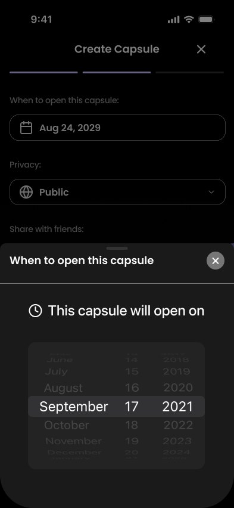
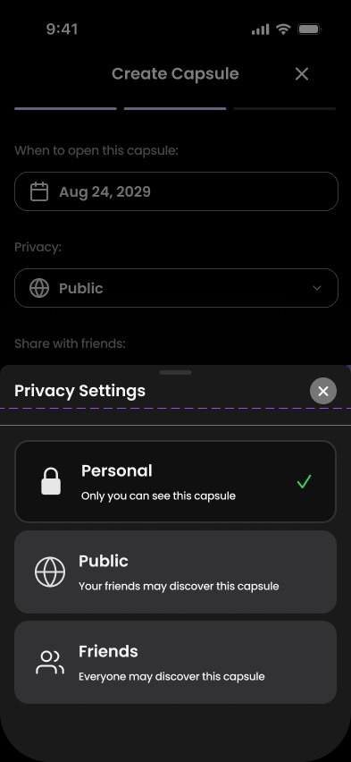
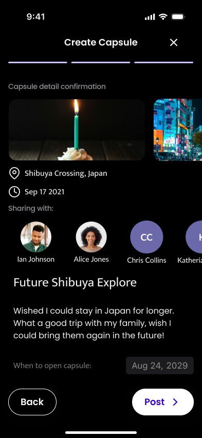
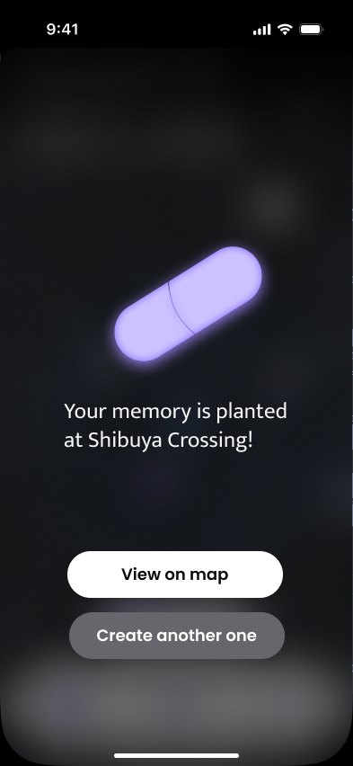
04
Open a Capsule
User problem. A memory needs context: who, when, where, to feel meaningful rather than just visible.
Design rationale. Media is shown first, authorship/date second, social layer (comments, views) last, mirroring how memory itself is processed.
Final UI. Full-bleed media viewer with capsule ID, creation date, and inline comment thread; AR mode overlays the same capsule in physical space.
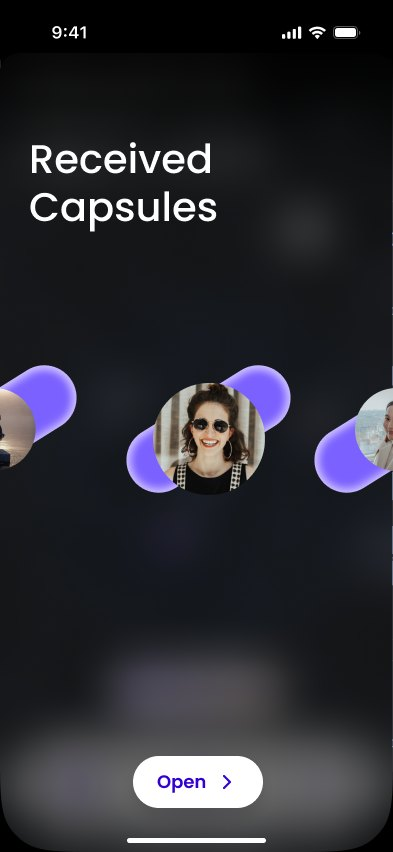
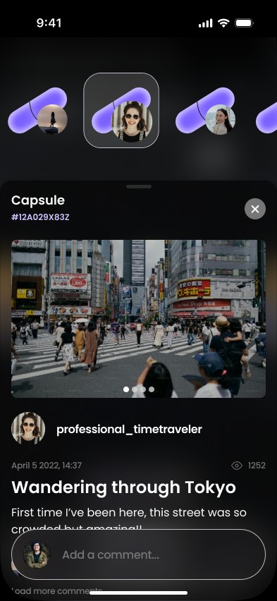
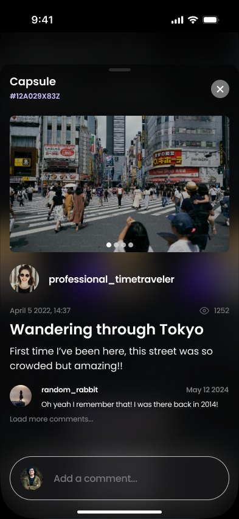
05
Connect With Others
User problem. Reconnecting with a dormant relationship carries high social friction as a cold message.
Design rationale. A shared capsule is a lower-friction entry point into contact than a direct message, connection happens through a memory, not before one.
Final UI. Tapping a capsule author opens their profile (memories, friends, pinned items); a "Received Capsules" surface holds anything scheduled for future delivery.
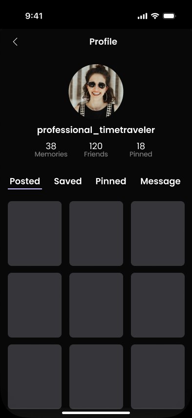
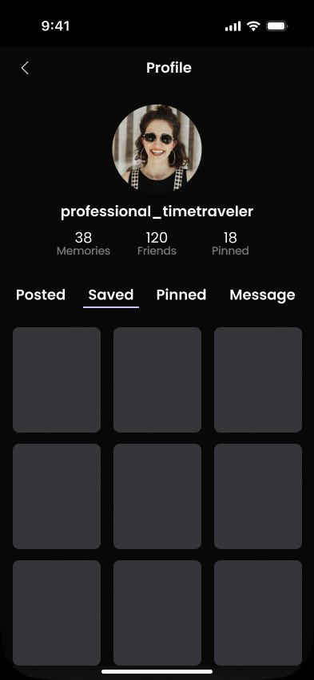
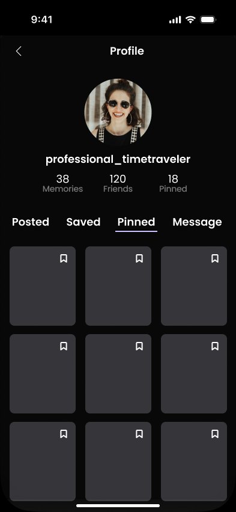
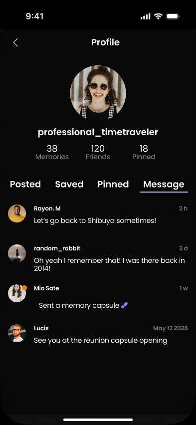
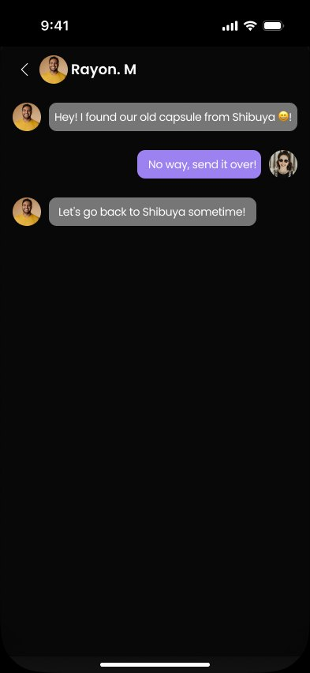
Clickable Prototype
Full interactive flow in Figma
open the prototype in a new tab ↗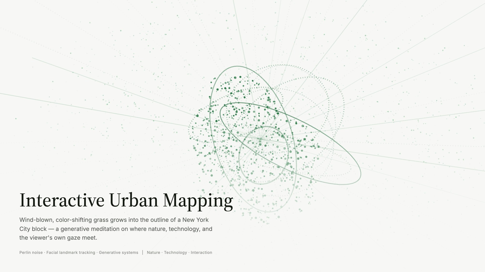
Project Direction
This piece begins with a longing for land, the pull toward a place that isn't just geography but memory. At its center is a field of wind-blown grass, color and thickness and length shifting over time as though the field itself were breathing, alive with the same restlessness as memory. Hidden inside that movement is the outline of a specific New York City neighborhood, its streets and blocks quietly shaping how the grass grows. Nature and city, memory and place, drawn from the same root.
The lines that move through the grass aren't just wind, they're memory made visible, motion carrying the trace of a place that's been lived in, walked through, held onto. When a viewer's hand enters the frame, a filter finds the fingers and traces those same lines across the skin, city becoming skin, skin becoming map. It's a quiet cue: the viewer isn't only watching the landscape, they're being written into it. To look at the grass is to become part of what it remembers: human, nature, and the wider universe folded into the same vivid, moving line.
01 . CONTEXT
System Story
Grass, memory, and a city block folded into one growing
02 . METHOD
Prototype Probe
How noise, map data, and hand-tracking are built into one system.
03 . REFLECTION
Human Response
hands enters the frame, and the map is traced across the skin.
Human Response
The interactive filter in action: a hand enters the frame, and the same lines that move through the grass are traced across the fingers.
Prototype Probe
How to Achieve
Dynamic wind-blown grass:
Use Perlin noise to drive natural, non-repeating motion. Let color, thickness, and length evolve continuously rather than looping, so the field reads as alive rather than animated.
Map integration:
Convert the chosen NYC area into geographic data (street lines, block shapes) and use it to steer how grass is distributed and grown — density and direction following the map rather than sitting on top of it.
Hand tracking and interaction:
Use a hand-tracking library to detect when a hand enters frame, then project the map lines onto the fingers in real time, tying the interaction to touch rather than passive viewing.
Animation and rendering:
Update each blade's state every frame inside draw(), rendering position, color, and length together so the field reads as one continuous motion rather than isolated objects.
Interaction handling:
Listen for hand presence and movement, and let the grass's visual behavior respond with subtle shifts in color or motion, so the piece feels responsive rather than scripted.
# First Sketch
A first pass in p5.js: 200 generative lines, each seeded from a random point. Every frame, each line extends slightly along an angle drawn from Perlin noise: a small, simple rule that produces something that reads as wind. It's the seed the rest of the piece grows from.
Creative Technology · Live p5 Sketch
Interactive Systems Lab
Creative Technology
Skull Slot Machine
A Halloween slot machine housed in a 3D-printed skull: press the button, watch the eyes spin, win candy.
Interaction · Physical Computing · Mechanical Eng. Arduino IDE · Blender · Cura. Arduino Nano · Stepper Motors · Servo · 3D-Printed Housing
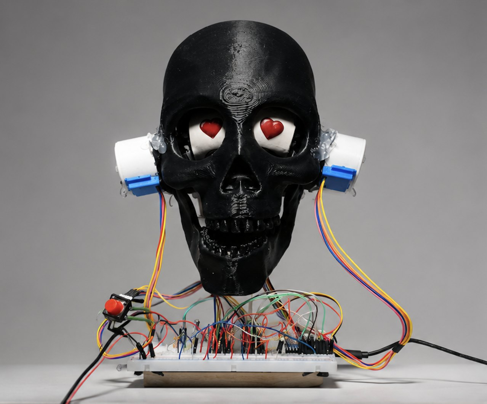
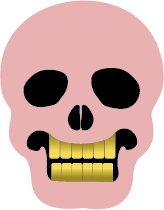
Project Overview
Skull Slot Machine reimagines the classic slot machine as a tactile, Halloween-themed installation. Press a button and the skull's eyes spin like slot reels through four symbols each; align both and the mouth opens to dispense candy.
The project sits at the intersection of mechanical design, embedded programming, and playful interaction, turning randomness and probability into a physical, rewarding moment.
DISCIPLINES
Interaction Design Physical Computing Mechanical Engineering
TOOLS
Arduino IDE Blender Ultimaker Cura
HARDWARE
Arduino Nano Stepper motors, servo motor 3D-printed housing
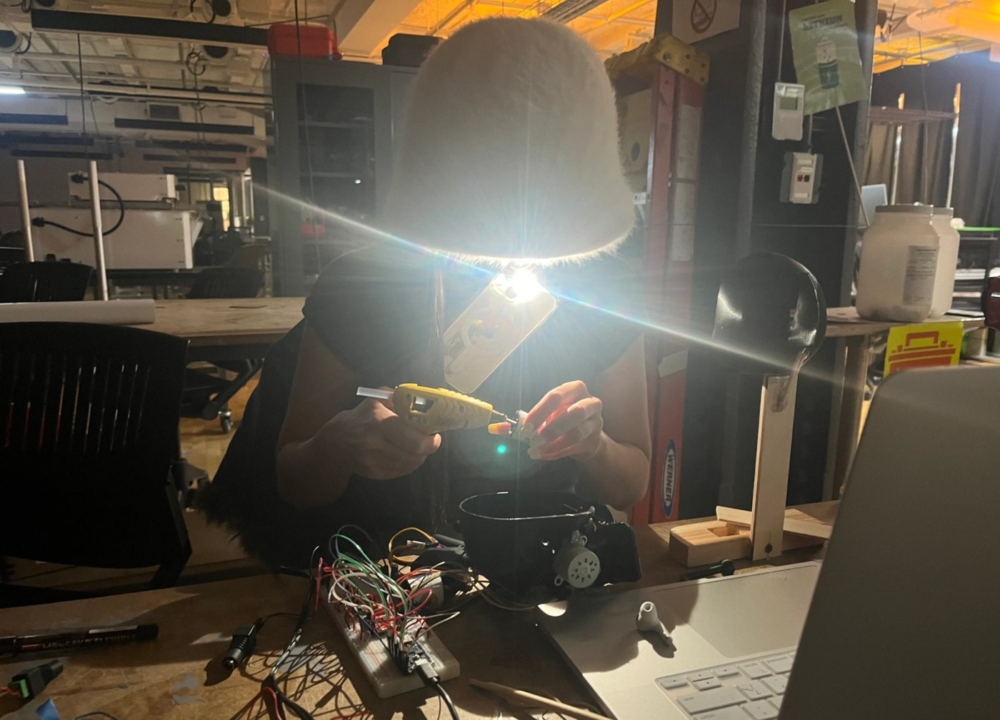
My Role
I led technical development end-to-end, owning both software architecture and the physical computing system:
- Designed the Arduino control logic governing the full interaction sequence
- Programmed stepper motor behavior for randomized, independent eye rotation
- Developed the symbol-matching algorithm that determines win conditions
- Integrated servo control to trigger mouth-opening and candy release
- Handled wiring, testing, and debugging across the full electromechanical system
Core contribution: converting rule-based logic — randomness, probability, matching: into precise physical motion through code.
Internal layout sketch
Early component & wiring plan
System Design
On button press, the sequence balances genuine unpredictability with logic that stays legible and satisfying:
1. Two stepper motors independently rotate the eyes in ¼-revolution increments, up to 2 full revolutions - 8 discrete symbol positions per eye
2. A random value per motor is mapped to a symbol position via modulus-based logic; the remainder sets the final resting symbol
3. Matching symbols on both eyes trigger a servo motor to open the mouth
4. The mouth holds open 2 seconds to dispense candy, then closes automatically
The Build
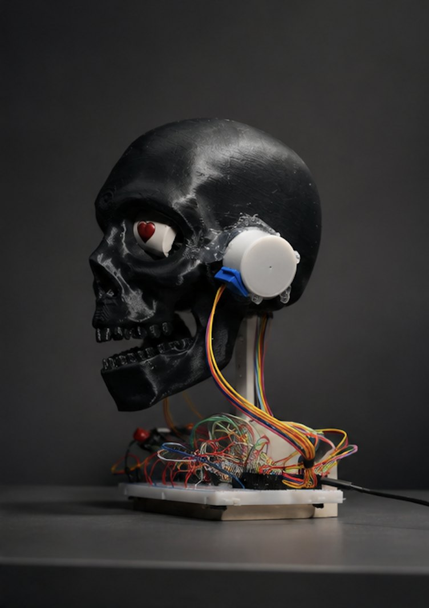
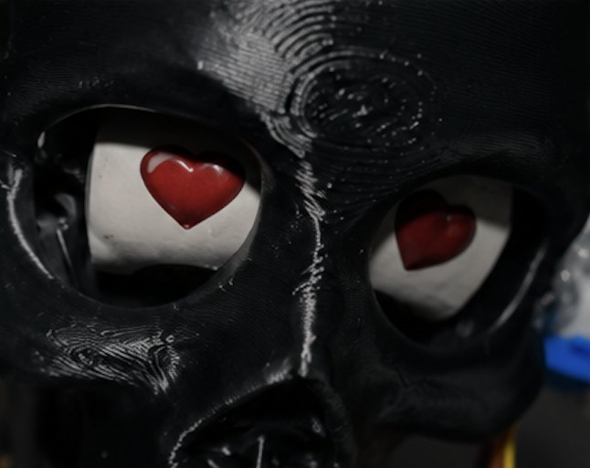
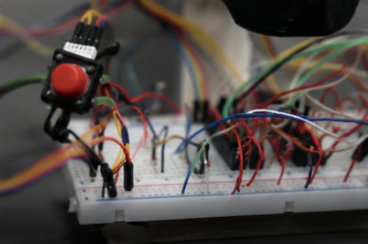
Reflection
This project sharpened my ability to bridge software logic and physical systems by translating computational randomness into tangible motion, and coordinating multiple motors with tight timing precision.
It deepened my interest in physical computing as a storytelling medium, where code doesn't just run in the background, but directly shapes how someone moves through and experiences a moment.
Light and Shadow
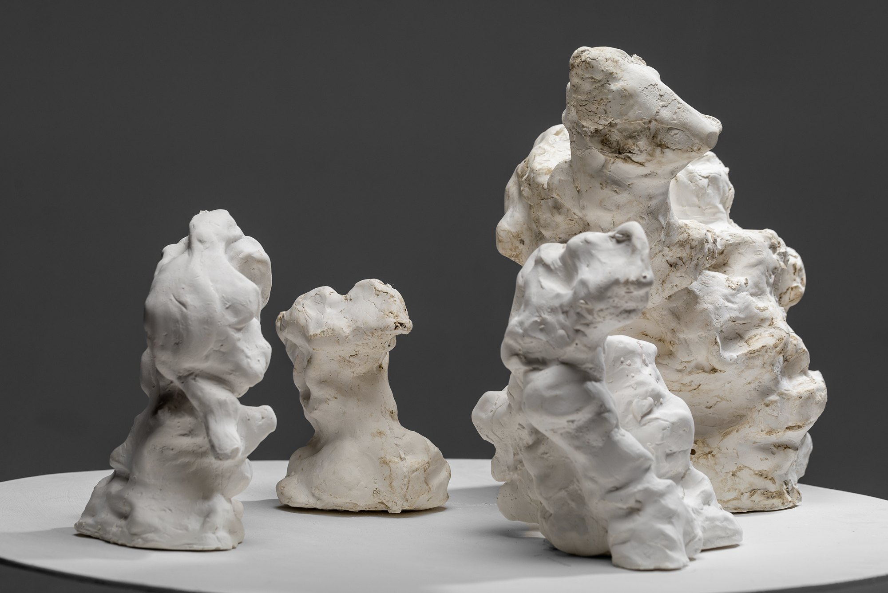
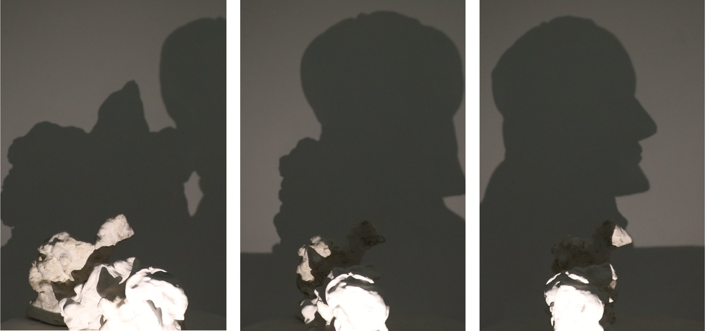
Light and Shadows
(I, II and III) Sculpture studies, fired clay, 2020
“The prisoners see only the shadows cast by these statues and other objects; and having lived in the cave from childhood, they no longer recall any other reality. They do not suspect that these shadows are but imperfect images of objects that they cannot see; and consequently they mistake the shadows for the real.”
--Plato, Allegory of the Cave
Overview
Shadows and Light explores the relationship between perception, reality, and identity through sculpture, light, and motion. Inspired by Plato's Allegory of the Cave, the work questions how people construct reality from incomplete information and how perception shapes our understanding of ourselves and the world.
Rather than treating sculpture as a static object, the installation uses light, shadow, and rotation as equally important materials. As the sculpture slowly turns, fragmented forms align to produce a complete human silhouette through shadow, revealing an image that exists only temporarily. The work invites viewers to consider whether reality lies in the physical object or in the perception it creates.
Concept
My artistic practice often investigates philosophical questions surrounding existence, memory, identity, and human perception. During this period, my work shifted from formal explorations of geometry and found objects toward more personal questions about cultural identity and selfhood.
Shadows and Light reflects this transition. It asks how identity is constructed between what is physically present and what is mentally perceived—between the tangible self and the image we project onto the world.
The installation draws directly from Plato's Allegory of the Cave, where prisoners mistake shadows for reality because they have never experienced anything else. By transforming fragmented objects into a coherent shadow portrait, the work suggests that our understanding of reality is often assembled from incomplete perspectives.
Process
The sculpture consists of four independent plaster forms positioned on a rotating platform. Individually, each form appears abstract and disconnected. Only through the interaction of movement and light do the pieces combine into a recognizable human profile.
Rotation introduces time as a material, allowing the sculpture to continually shift between abstraction and representation. The shadow becomes a temporary image that exists only through the relationship between object, light, and viewer.
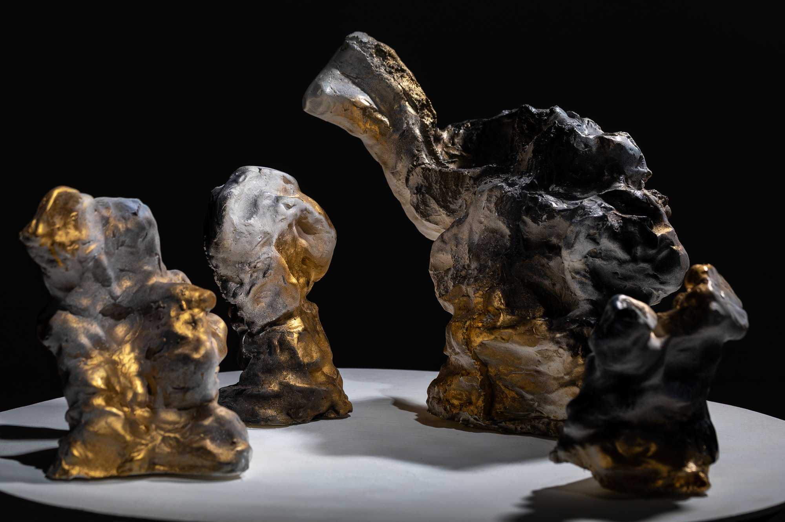
2021 · An exploration of light, reflection, and spatial perception.
Yellow Box
Yellow Box
Landscape Installation, plastic bags, 2019
In the midst of a sprawling, untouched landscape, a box stands out as a striking anomaly, evoking the iconic monolith from "2001: A Space Odyssey". This incongruity in the natural setting is stark - a man-made object in a place seemingly untouched by modernity.
As we gaze from afar, the box's plastic material takes on a deceiving texture, almost resembling wool, blurring the lines between the artificial and the natural.
My installation, titled 'Yellow Box', stands as a warning against a dystopian future, illustrating the onset of a plastic invasion in the natural world.
This work symbolizes the early stages of an environmental crisis, where synthetic materials begin to disrupt the harmony of natural landscapes.
The box's imposing dimensions, standing 10 feet high, 10 feet wide, and stretching 65 feet in length, are intentionally chosen for impact. Its sheer scale and volume are designed to evoke a sense of terror when viewed up close, highlighting the overwhelming and intrusive nature of plastic pollution in our environment.
To create this piece, I gathered thousands of used plastic bags, dyeing each one a vivid yellow.
This color choice is deliberate – not only it ensures that the installation stands out against its surroundings, the color yellow is also often associated with caution, underlining a sense of warning and urgency.
Beneath this bright, artificial skin lies a wooden frame, symbolizing the intrusion of man-made materials into natural environments.
The box itself critiques humanity's neglectful impact on the delicate balance of our ecosystem.
2019 · Sculpture. Interactive Installation
Ant Box
Ant Box
Performance Installation, ants, Bare Conductive Touch Board, 2022
My work Ant Box is an bio-art installation, of which I created during the ongoing COVID lockdown.
The trapped ants, being an analogy of people during COVID lockdown, were interlinked by a common fate. They have no control over their circumstances, yet are able to sing a song under their united efforts.
As they move across the copper conductive tape, their movements trigger notes in the C minor scale. This choice of scale is a deliberate nod to Beethoven's Symphony No. 5 in C minor, often referred to as the 'Fate Symphony'.
The installation uses a transparent acrylic construction, meant to expose the inner workings of the system.
The interior of the box inhabited by ants, was covered in a labyrinthine made out of conductive copper tape.
This tape is wired to a Bare Conductive Touch board housed in the box beneath, with its output linked to a speaker. Each time an ant makes contact with the tape, it activates the microcontroller, which plays a musical tone.
As clusters of ants navigate this labyrinth, their movements orchestrate a sequence of piano sounds. This turns their random scurrying into an unexpected musical performance, with each step triggering a note, creating a symphony that mirrors their collective journey within the confines of the box.
2022 · A boxed system exploring observation, containment, and constructed micro-worlds.
Pyro-Dino I
It is the ebb and flow of an oceanic feeling, a childhood dream revived,
A symphony played on the winds of change, whispering in the rustle of leaves.
It dances in the dappling sunlight through ancient trees,
Patterns of light that tell tales of time unspent,
A quiet place where one can exhale the refreshing air.
The cold, swirling wind that races into my lungs,
The scent of wooden smoke, ash curling into my nostril,
Nature is the resilience of the mountain,
Stoic, cloaked in the mist of early dawn,
The mystery of deep forests, where shadows hold secrets
Of beasts and blooms unseen.
A glacial river flowing into my veins,
Cherry blossoms, pink and hidden, in the city’s corners,
Nature is the relentless wave kissing the shoreline,
An eternal lover, tender yet powerful,
A wine-red sunset glazed atop the skyscraper’s crown,
Its vast silence in the desert, where solitude speaks louder than thunder.
It sings in the rainfall, a melody pure and cleansing,
Nourishing the parched earth, awakening the dormant seeds,
The burst of life in spring, a colorful canvas painted afresh,
Flowers erupting in celebration, a carnival of blooms,
The gentlest touch of the butterfly's wing,
Causing the air itself to ponder the fragility of life.
The fierce roar of the river in flood,
Carving paths, shaping destinies with liquid force,
It is the calm of spring, the heat of summer,
The chill of fall, the freeze of winter,
Scenes of nostalgia.
In every corner of the earth,
In every droplet of the sea,
In every grain of sand,
Nature lives, breathes, and speaks its silent language,
An invitation always open,
Calling us back to the roots of our existence
2023 · Media Art. Interactive Installation
Artist Statement
I want to tell you about the life cycle of a seed.
I want to tell you how a flower slowly fades and falls.
I want to feel, with you, the salty sea breeze brushing through our hair.
I want to feel, with you, the sharp touch of silvergrass grazing across our fingertips.
Yet I do not know how many moments and memories like these remain for us.
I want to preserve my obsession with memory,
my devotion to every fragment of remembrance,
sealed away within those archives.
Until we both find redemption at the next turning point of a technological age.
Until our cells dissolve into particles,
vanishing into an endless expanse of code,
and there, at last, melt into one another.
1. On Technological Advancements, Civilization and Ethics
“I can imagine that the oceanic feeling could become connected with religion later on. That feeling of oneness with the universe which is its ideational content sounds very like a first attempt at the consolations of religion, like another way taken by the ego of denying the dangers it sees threatening it in the external world.”
―Sigmund Freud, Civilization and Its Discontents
The feeling of being oceanic serves as a metaphor for love, embodying a sense of religious wonder. In ‘Civilization and Its Discontents,’ Freud posits that love acts as a unifying force in society, while civilization - the act of being civilized, imposes constraints to curb humanity’s primal desires.
Nuclear power, computers, internet, virtual reality, artificial intelligence. As technology rapid advances, human individuals are given unprecedented strengths to shape the world around us. Without love, moral and ethical constraints, us human could impose great danger on ourselves and the world around us, whether physical or psychological. It has never been so urgent for us to address the ethics of our practice with the utilization of technologies.
2. On Technological Advancements and Human Existence
“We need to understand that five hundred years of humanism may be coming to an end, as humanism transforms itself into something that we must helplessly call post-humanism.“ (Hassan, 1977, p. 843).
The temporal nature of our existence, means that our physical bodies will eventually vanish, leaving nothing but memories of us. As our physical body turn into ashes and reunite with the natural elements, our consciousness will fade into oblivion. Yet, artifacts created by us will outlives us, carrying the depth of our humanities beyond us.
Manmade objects carries the significance of human self-preservation. They are our non-biological off-spring. Technological artifacts of our age are no different - digital imprints, data and images, are records able to preserve our ‘self’, better than any other known medium in the entire human history.
Yet, as technology advances, synthesized and generated information are starting to become indistinguishable from recorded data. As AI and AR/VR reshape the realities of mankind, our specie is under the great danger of the inability to prove our true existence to future generations, after our demise.
3. On Nature and Post-humanism
In stark contrast to humanism, post-humanism states that humans are no longer the center of the natural world. Post-humanism challenges anthropocentric perspectives, advocating for a more holistic and integrated view on humanity’s place within the broader ecological and biological contexts. It encourages us to see human beings as part of the natural world - plants, other animals, or ecosystems, instead of being separate from, or superior to them.
Post-humanism frequently explores the implications of technology on nature and human life. Some discussion are in the realms of biotechnology, genetic engineering, and artificial intelligence, all of which are fields of studies questioning the boundaries between the natural and the artificial. Post-humanist discourse often questions what counts as “natural”, in a world where technological intervention is pervasive.
4. Statement
We should stay mindful on the risks of neglecting natural environments over technological advances. We long for the abundance of resources, as it is pivotal for our survival; yet without constraining our primal desires, we are putting the environment that we rely on at risks. The effect of unrestrained exploitations, manifest in the form of severe oceanic pollution, mountains of plastic waste, depleting natural resources, climate change, extinguished animals, and many other forms. If not regulated, we will eventually pay for our greed and the consequences of our short-sighted actions.
In Chinese Taoist philosophy, man is to follow the guidance of nature, not to conquer nature. For that reason, the man-made and the natural were once not a set of binary opposition in the traditional Chinese cultural context. This begs the question: is it possible to perceive a world where the natural and the man-made count as equals?
Being an artist who grew up with a profound love for nature, my childhood memories were filled with the natural world. I remember observing the shape of flowers, seeing how the wind freely animates the leaves, and smelling the warm, damp scent of the sea. These are moments I think of fondly, which have great significance in shaping my artistic identity. To me, nature represents the ultimate expression of freedom – a freedom I pursue relentlessly in life and through art. This love for nature is not just an appreciation of its beauty, but a deep connection to the natural world around me, reflecting my journey towards personal and artistic liberation.
To conclude, we live in an era that balances on the cusp of technological dominance and a steadfast love for our natural world. As an artist, I want to address this time of change, by discussing the aforementioned topics through my work, (artifacts of existence, ethics in technology, and post-humanism), all while interweaving my passion and love for nature into my project.
School Sphere · Mobile . iOS Version
School Sphere is a mobile platform that streamline communication and administrative workflows across K–12 schools.
The platform improves operational efficiency by unifying communication and administrative workflows for teachers and administrators.
SCOPE
0 —> 1 Product
DURATION
90 days
ROLE
UX Research, UX/UI Design
Problem:
Teachers face significant administrative overhead from managing communication, reporting, scheduling, and student records across multiple disconnected systems, reducing time available for teaching and student support.
Administrative tasks are fragmented across multiple platforms, creating inefficiencies that limit educators' ability to focus on student engagement and career development.
Solution:
Created a unified platform for teachers and administrators to manage communication, reporting, scheduling, and student records in one place, reducing administrative overhead and improving operational efficiency.
Discovery:
Research focused on understanding administrative workflows within K–12 schools and identifying inefficiencies in existing communication systems.
Key Finding:
- How do educators manage communication and administrative tasks today?
- Where do existing systems create inefficiencies?
- Which workflows consume the most time?
- What features are essential in a centralized school management platform?
User Interview:
Conducted 10+ one-on-one interviews with teachers and administrators to understand their daily workflows, communication challenges, and administrative responsibilities.
Julia | 43 | Administrator
“Administrative tasks are extremely frustrating because I have to use multiple different forms to submit work, which is really no point of doing redundant wok.”
Micheal | 32 | Teacher
“Reaches out to parents are absences or tardies every morning.”
Kim | 28 | Teacher
“People will literally give us incorrect phone numbers and then make it our problem”
Key Takeaways:
- Communication is fragmented across multiple platforms
- Administrative tasks consume significant educator time.
- Student information and operational tools are not centralized.
- Frequent context switching reduces workflow efficiency.
Define:
Competitive Analysis:
Assessed industry-leading solutions to understand current market offerings, workflow limitations, and opportunities for operational improvement.
| Platform | Pricing Model | Communication | Administration | Translation | Key Strength |
|---|---|---|---|---|---|
| Seesaw | Freemium + School Subscription | Strong | Limited | Basic | Student work sharing |
| Bloomz | Freemium + Premium Plans | Strong | Moderate | Limited | Classroom engagement |
| Remind | Subscription | Strong | Limited | Basic | Mass messaging |
| ClassDojo | Freemium | Strong | Limited | Moderate | Classroom communication |
| ParentSquare | District Subscription | Very Strong | Moderate | Strong | Unified family engagement |
| Kinvolved | District Subscription | Moderate | Limited | Basic | Attendance communication |
| TalkingPoints | Free for Teachers / District Quote | Strong | Limited | Excellent | Multilingual communication |
Persona:
Research-driven personas helped guide design decisions and ensure the product addressed users' needs, pain points, and goals.
Product Opportunity:
How might we turn a teacher's one-off outreach into an automated, visible follow-up system without adding to their workload?
Strategy: Two principles guided every design decision.
01: Surface status, not just history
A log of what happened is less useful than a clear read on what needs to happen next.
02: Automate the nudge, not the relationship
The system should chase silence so the teacher doesn't have to the human conversation stays human.
Ideate:
User Flow
User Site Map
Prototype:
From a passive communication log to an actionable workflow that guides teachers to the next step.
Case status: making "action required" impossible to miss
First pass tracked cases with plain checkmarks: no signal for what still needed a teacher's attention.
Timeline: separating what's live from what's history
A real information-architecture decision, not a visual pass. Details and Timeline became two distinct tabs so current status never gets buried under old entries.
The automated follow-up toggle: the one feature that directly answers the HMW.
Automating reminders reduces the number of manual follow-up attempts a teacher makes per unresponsive parent, giving back the time the 35% stat surfaced in research.
Validation:
Usability testing, start to finish.
Research questions
- Can teachers tell, at a glance, which cases need action?
- Does the automated follow-up toggle read as trustworthy, not as one more setting to manage?
- Does separating Details from Timeline actually reduce time-to-find for a past entry?
Background
Pre-test
Task / think-aloud
Post-test
What changed as a result:
Testing surfaced that "Resolved" needed to exist as its own state, not just an absence of red, direct feedback that shaped the color-coded status system shown above. Participant count and task-level metrics: add here once finalized.
Reflection:
What I learned:
Converging on one persona early made every later decision faster to evaluate, instead of designing for four teachers at once, we could ask "does this serve Ms. Lee?"
What I'd do differently:
Track task-level metrics (time-on-task, success rate) from round one of testing, so the before/after story has numbers alongside the qualitative signal.
Future Opportunities:
- Privacy controls around parent contact data
- Integrations with existing gradebooks and attendance systems
- Import/export for districts switching from another platform
- Simplified onboarding for less tech-savvy teachers
- Product cohesion with the rest of SchoolSphere: grading, attendance
{{d.title}}
{{d.lede}}
“{{d.quote.q}}”
{{sec.h}}
{{pp.text}}
- {{it.text}}
“{{qq.q}}”